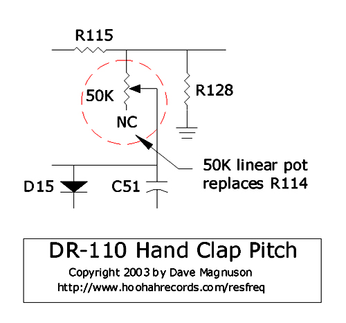
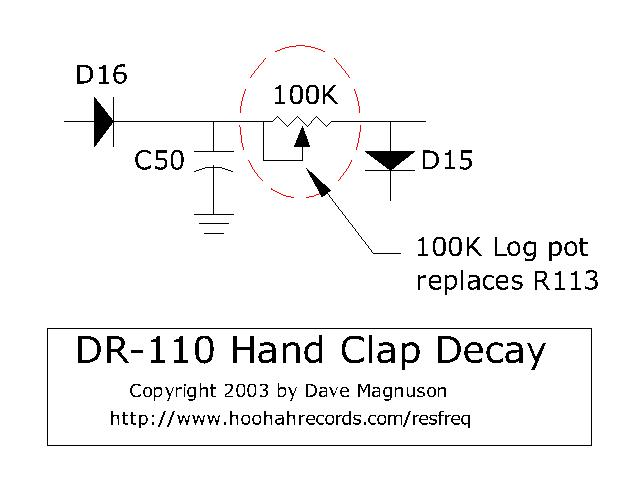
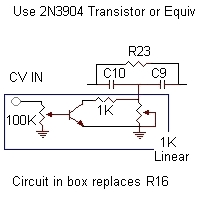
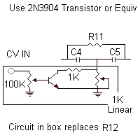
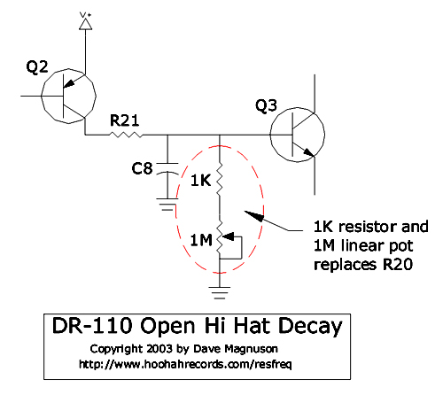
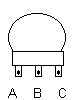
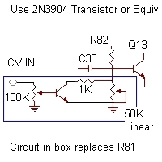
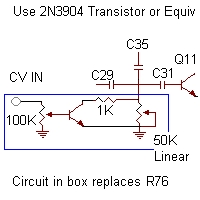

The following mods were gleaned from Dave Magnuson's "Resonant Frequencies" page, which has since been swallowed by the ever-shifting internet. Lucky for you, I hate it when stuff like that goes away, and now that it's gone from it's original site, I've copied the important bits and have placed them here. I'll make it pretty later, for now, here's the raw info.
Remove R114 from the DR-110 voice board. Attach two wires to the holes in the circuit board. Wire a 50K linear pot to the two wires as shown. Please note that one end of the pot is left unconnected.
Remove R113 from the DR-110 voice board. Attach two wires to the holes in the circuit board. Connect a 100K log taper pot to the two wires as shown in the diagram below.
You need to remove R16 from the voicing board in your DR-110. Solder two wires into the old location, and fly them to a new circuit board. On this new board, construct the circuit shown in the box on the right. Use a 1K linear pot for the manual filter control, and a 100K log pot for the CV level.

The Cymbal Decay control adds some really strange effects to the DR-110. This will allow
extremely short or extremely long cymbal sustain (15 to 20 seconds!!). Especially strange
noises can be created when used in conjunction with the filter mod above. I chose to simplify
things and skip the voltage control on this mod. You can add it if you'd like with the same
circuit I've been showing in the other mods.
Remove R44 from the voice board and attach 2 wires to the holes in the circuit board. You'll
need to wire a 1K series resistor and 1M linear potentiometer as shown in the diagram below.
On the right I've shown a small portion of the hihat circuit to clarify what I've done. First, I remove R12 from the voicing board, and solder two 4" to 6" wires into the holes. I then construct the simple circuit on an external circuit board, and use the two wires to tie it to the voicing board. I found that a 1K linear taper pot works well for the manual filter control, and a 100K log pot is a good choice for the CV level.
Remove R20 from the voicing board, and solder two 4" to 6" wires into the holes. These two wires are then connected to a resistor and pot. I found that a 1M linear taper pot works well for the decay control, with a 1K resistor in series between the existing circuit and the new pot.
To complete this modification, remove R70 from the voicing board. Install 2 wires to the holes you removed the resistor from, and connect them to a 1K linear pot. I connect the wire in contact with Q10 to terminals A and B on the potentiometer, and the second (ground) wire connects to terminal C. Note that this is a view from the back of the pot.
First, you need to remove R81 from the voicing board of the DR-110. Install two wires between 4" and 6" long into the holes you took the resistor from. I connected these wires to a new circuit board that I built to hold the additional circuits. I found that a 50K linear potentiometer works well for the manual control of the level, and a 100K log pot seems to work well for the CV level. The new transistor can be a 2N3904, or an equivalent. A portion of the snare circuit is shown on the right to help illustrate the new additions. On the manual control pot (50K), connect the new wire from Q13 to terminal C on the pot, and the ground wire connects to both terminals A and B.
Remove R76 from the voicing board. Again, fly two new wires from the voicing board to the new board, and construct the circuit as shown. Again, a 50K linear and 100K log pot are used, along with a 1K resistor and 2N3906 transistor. In this case, connect the wire that is in contact with C35 / C29 / C31 to terminal A on the 50K pot. Connect the other (ground) wire to terminals B and C.
The stock DR-110 already has an "Accent Trigger Output" circuit on board. It converts the negative-going CPU pulses to 6V, 10mS positive-going pulses. You can see this portion of the circuit on the section of the CPU board shown. (I have full DR-110 schematics available for download). As the CPU accent pulse goes negative, it allows capacitor C4 to discharge through D9. This in turn causes Q1 to conduct, pulling the accent output (through R5) to the positive rail (which is 6V in the DR-110)
I felt the stock accent trigger circuit was simple and effective, so I decided to replicate it for each of the drum voices. I simply copied the circuit components listed here
Looking at the ribbon cable connections at the edge of the CPU board schematic, you'll see the following CPU pulses:
There's a total of 8 CPU triggers that go to the voice board. One line is dedicated to Accent (which already has a trigger converter). Each other drum voice has it's own independent trigger, except the handclap which has 2 (one for a single clap, and a triple trigger for the slightly delayed hits around it). All you need to do is clone the accent trigger circuit 7 times and put it on a small perf board. I connected the trigger output board to the DR-110 CPU board with an 8 pin ribbon cable, and carefuly soldered each wire to the appropriate ribbon cable connections. Remember that the accent circuit is already on board. The positive accent pulse is available on the ribbon cable at wire 18. I also added a 2 conductor wire to supply power and ground.
I chose to strap an LED across the trigger outs, so I have a visual indication of which drum voices are firing at any given time. I duplicated R5, so that the collector of Q1 was tied to 2 1K resistors. One feeds the trigger output, the other feeds the LED. I connected all of the trigger outputs to a 9 pin D-sub connector which provides the 8 trigger outputs and a ground connection. For a unique look, I used a numeric display LED instead of 8 individual T-1 (3mm) LEDs. It's pretty wild to watch the numeric display, because it creates a bunch of weird alien characters on Playback.
Of course with this new circuit board, LEDs and D-Sub connector, you'll run out of space inside the DR-110 case. You'll need to come up with a crafty method to attach a new box. I simply added a small box off the rear of the case (above the grid display). I used super glue and a few #4-40 screws, nuts and washers to make a strong, permanent connection. I hope to add pictures soon.